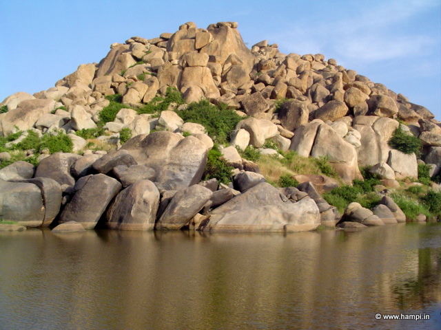
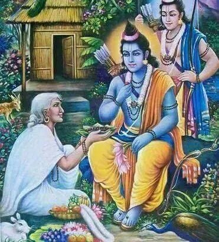
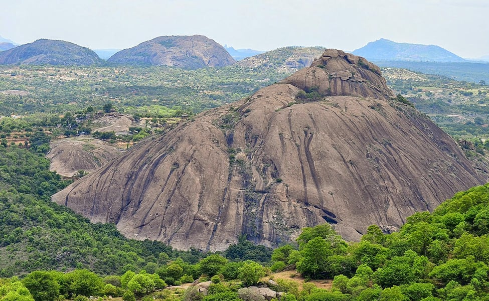
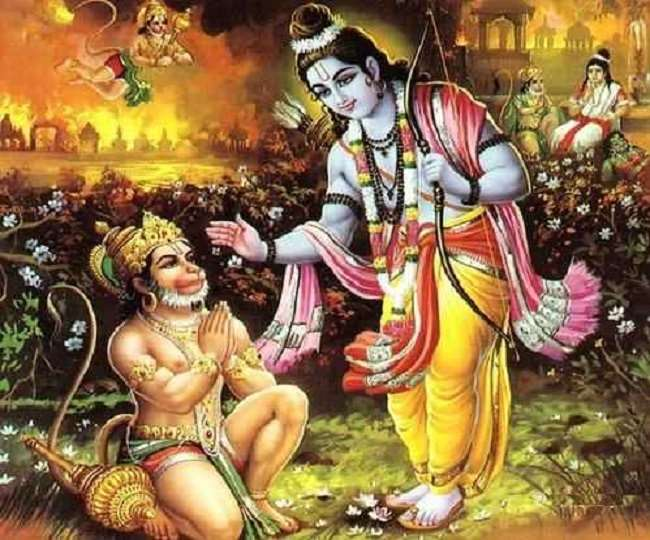
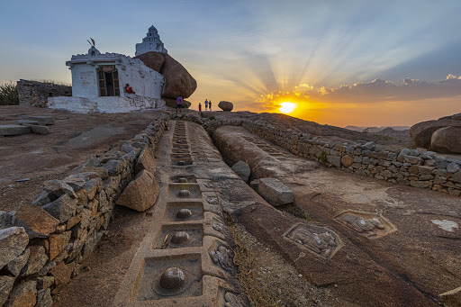
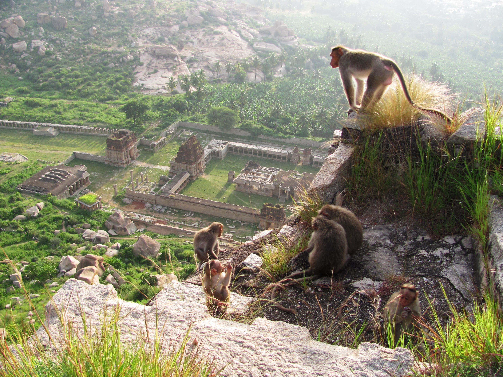
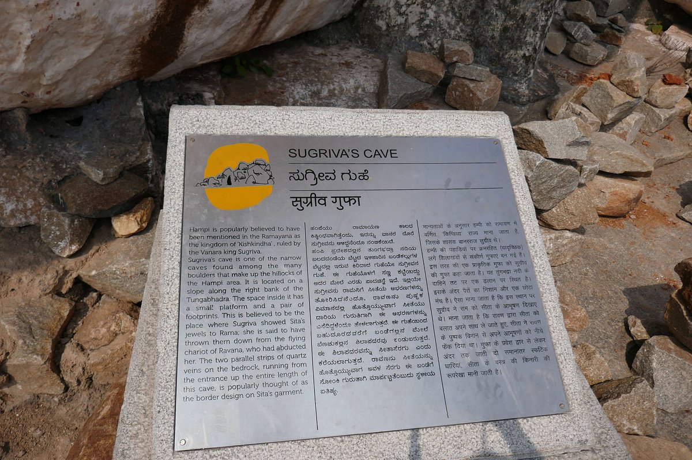
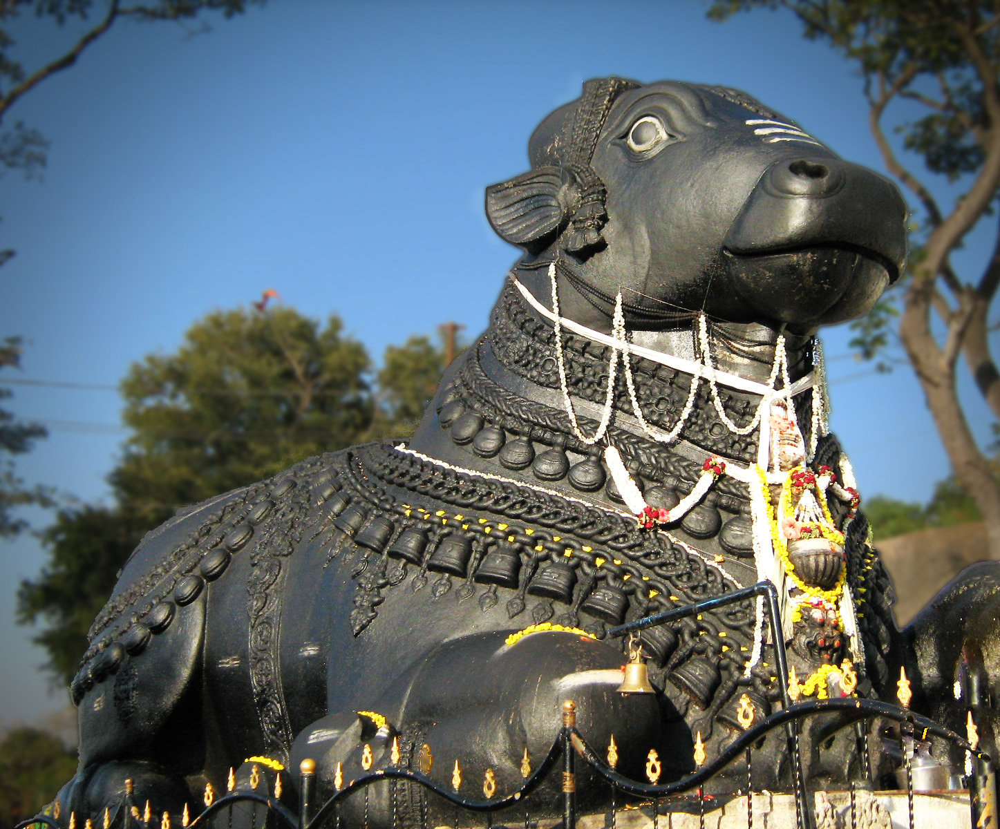

One of the most well-known and enduring epics of ancient India, the Ramayana has had an impact on many nations and cultures. It holds a special place in the hearts and minds of the people of the state of
Karnataka, who have long been enthralled by the epic's tales of bravery, love, and devotion.
Puppetry, dance, and music are just a few of the traditional artistic mediums used in Karnataka to present the Ramayana. In addition to
providing audiences with
entertainment, these performances have helped pass on the morals and lessons of the epic to younger generations.
Unknown yet very interesting facts about the Ramayana and its connection to Karnataka have been encapsulated in this
webpage.
The legends of Ramayana.

Rishyamukha Mountain

Sabari guha

Ramanagara
Hampi – All about Ramayana.
 Hampi
Hampi
Hampi, a UNESCO World Heritage Site in east-central Karnataka, is famous for its ancient temples. The walls, archways, and pillars of Hampi's temples are carved with the mythological tales of Hanuman and Lord Ram. Hampi probably has more depictions of Hanuman than any other God or mythological character.

Kishkinda
The Kishkinda kingdom is identified to be the regions around the Tungabhadra river (then known as Pampa Saras) near Hampi, Karnataka. The mountain near the river, named Rishimukha where Sugriva lived with Hanuman, during the period of his exile also is found with the same name.

Malyavanta Raghunatha Temple
Malyavanta Hill is an important landmark. It is notable for housing the Malyavanta Raghunataha Temple, which is devoted to Lord Ram. Lord Rama and Lakshmana waited here for the monsoons to end before continuing their journey to Lanka with the monkey army to rescue Sita.

Anegundi
Anegundi is located on the north bank of the Tungabhadra River. From a mythological standpoint, it is believed to be so because it literally translates to a forest inhabited by monkeys. It is home to a number of temples and historical sites like Anjanadri Hill where Hanuman was born, and the famous Rishimuka Mountain. Also, a nearby village is known to hold the ash of Vali's cremated remains.

Sugriva's cave
According to folklore, Sita dropped her jewels from Ravana's pushpak viman when she saw Sugriva on the ground near this cave. The cave where Sugriva first met Ram and handed over her jewels, located near Tungabhadra. Outside this cave, there are footsteps carved. According to local guides, these footprints are the exact location where Ram stood and shot Vali.
The curse of Nandi.
Ravanasura, flying back to Lanka after looting Alakapuri and defeating Kuber, was unable to fly over Mount Kailash. When he tried to enter, he was stopped by Nandi, who told him that Shiva and Parvati were enjoying dalliance there and
no one was allowed to pass. Ravan insulted Nandi and tried to uproot Kailash, causing Shiva to intervene. He pressed the mountain into place with his big toe, crushing Ravanasura underneath. Ravan then performed penances for a thousand
years to please Shiva, sacrificing his heads and singing hymns of praise, including the Ravanrachit Shiv Tandav Stotram.
Although this event does not take part in Karnataka, Nandi is an important figure in the mythology and culture of Karnataka, revered as the loyal mount and gatekeeper of Lord Shiva. He is widely worshipped and his images can be found in many Shiva temples throughout the state. The name "Nandi" is believed to be derived from the Kannada word "nandu", meaning "joyful", and the bull is considered a symbol of strength and fertility., and features prominently in various dance forms and musical compositions. Overall, he holds a special place in the hearts and minds of the people of Karnataka as a symbol of devotion, loyalty, and strength.
